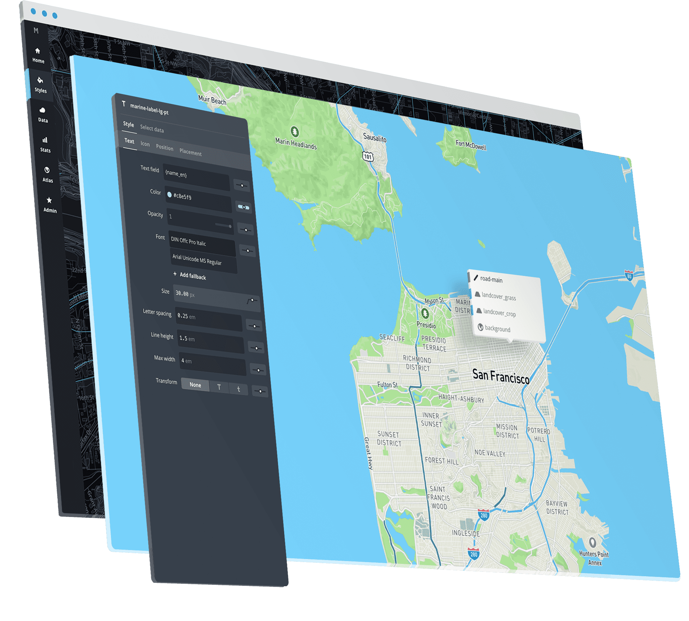
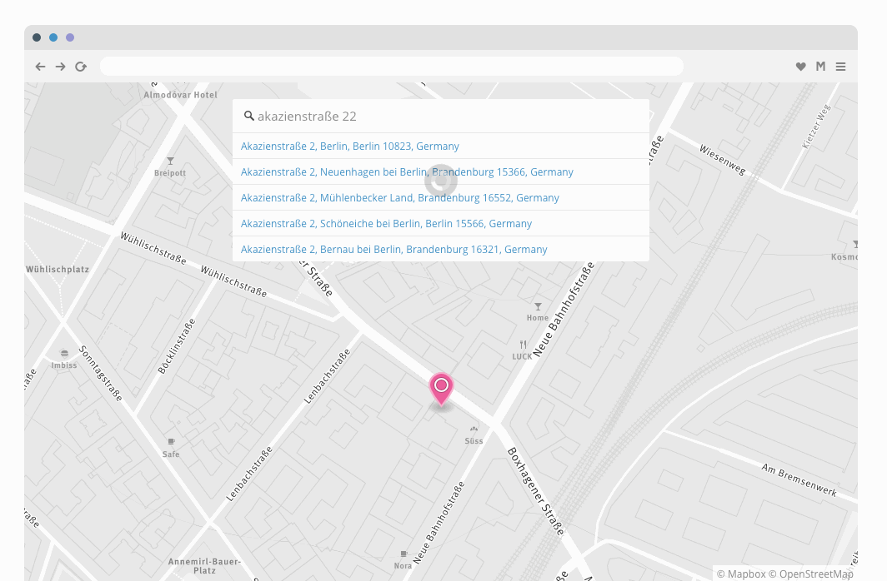

Thanks to our sponsors!
ORURISAorurisa.org
ORURISA YP
orurisayp.org
I'm
@geografa
.
I'm with
@mapbox
support.


Lightning Talks
Floor Plans with Mapbox GL JS
What's your fave city? http://bit.ly/1qm4xyC
PDX Boom http://bit.ly/1qqKRcH